Featured projects
Selected work
Research, visuals, and the experience in between.
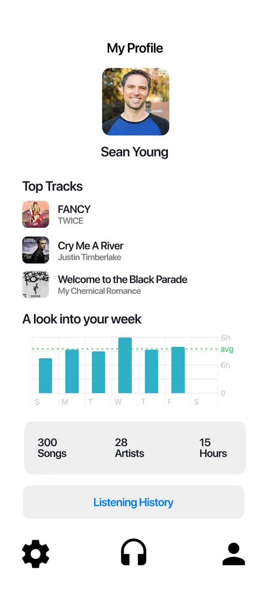
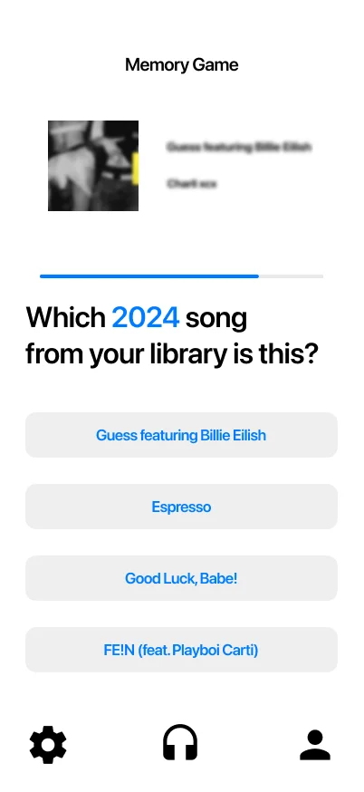
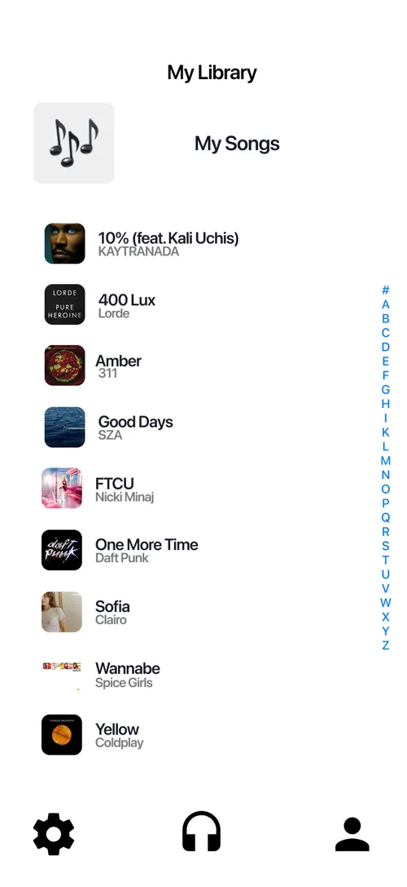
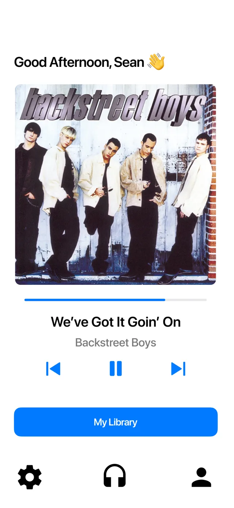
App concept
Remembra
Memory care through familiar music.
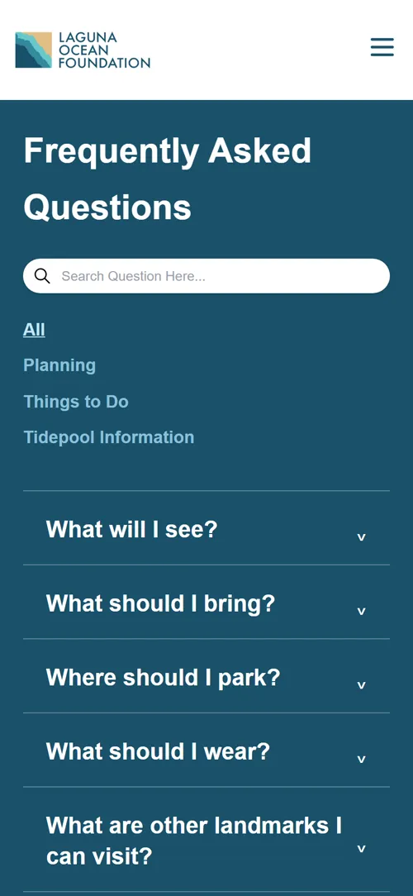
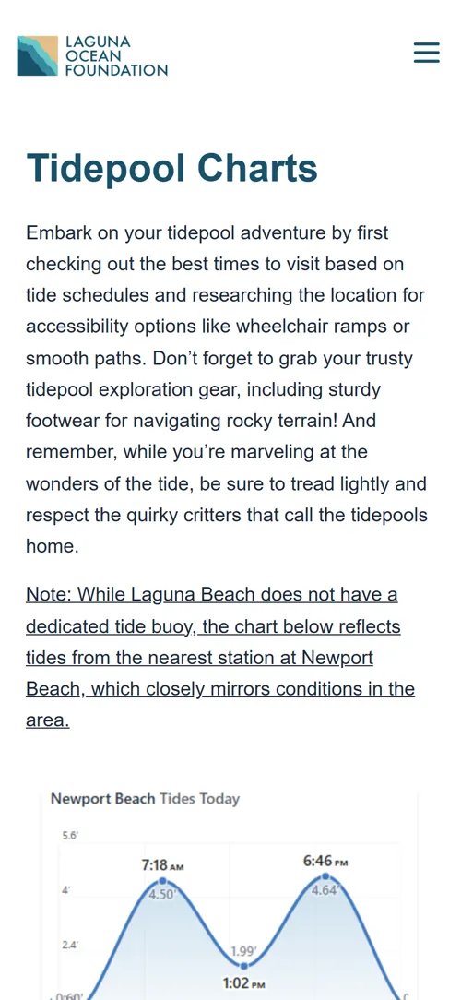
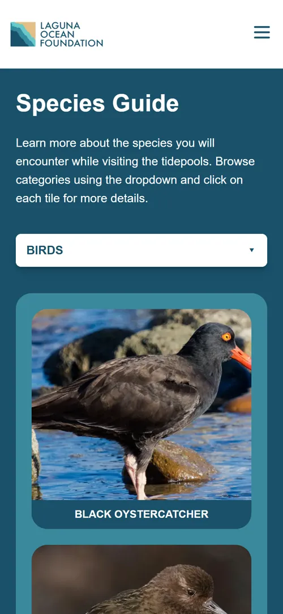
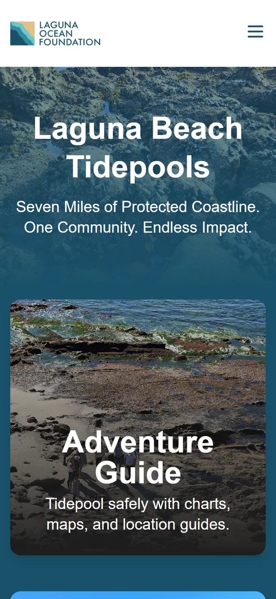
Website redesign
Laguna Ocean Foundation
An easier way to plan a tidepool visit.
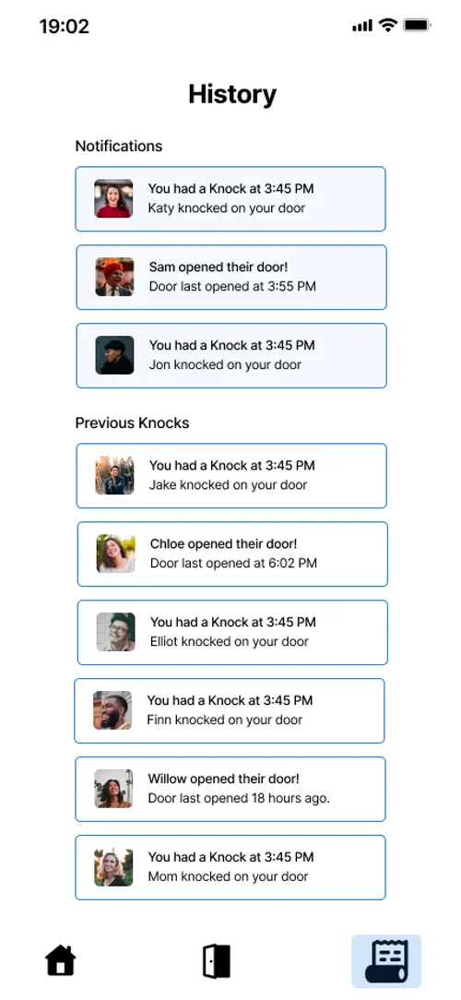
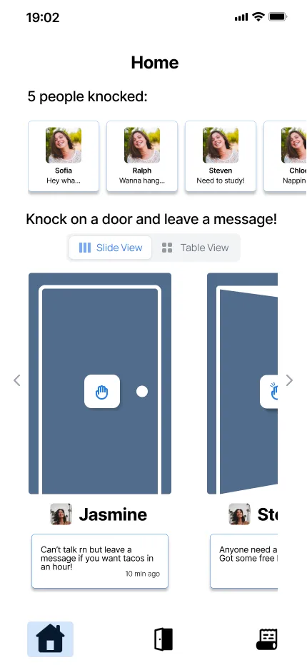
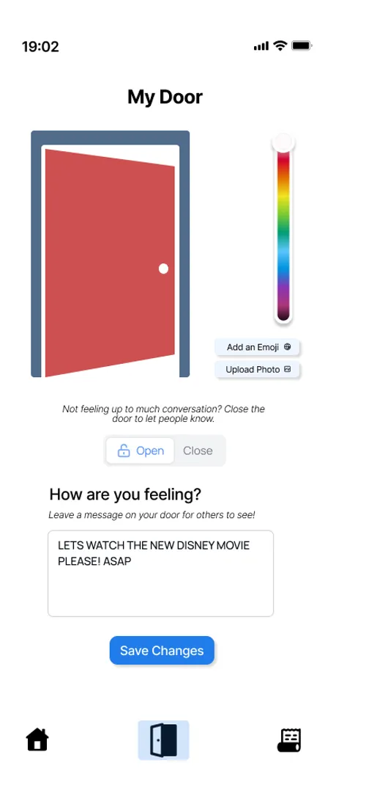
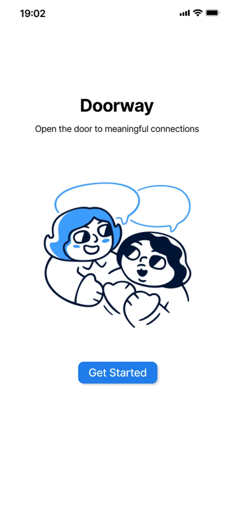
Product concept
Doorway
Nudging people to reach out first.